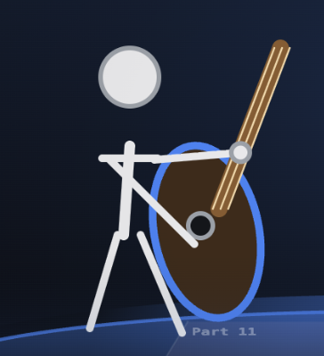
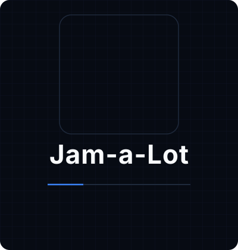

Jazz standards
Thousands of open jazz standards — bebop, modal, swing, ballads, bossa, latin, waltz, and the American Songbook.

Jam-a-Lot Launch the appJam-a-Lot pulls from every open-source chord collection — jazz standards, pop changes, bossa, blues, whatever you play. Set the feel, hit play, and then drive the band live: double time the next chorus, trade fours with the drummer, let living substitutions reharmonize the changes in real time.
No signup · No download · Plays in your browser

Why hunt across five tabs of chord sites? Jam-a-Lot aggregates the open-source chord collections — the jazz-standards corpus, the big academic chord datasets, community lead-sheet archives, and public-domain imports. If it's open, it's here. Standard, contrafact, pop change, bossa, blues — search once, play.
Thousands of open jazz standards — bebop, modal, swing, ballads, bossa, latin, waltz, and the American Songbook.
Tens of thousands of chord progressions from open academic datasets — practice over the songs you actually know.
Public-domain and Creative Commons lead sheets import straight in. Bring your own MusicXML or text chart too.
Paste a chord chart, edit it bar by bar, or write one from scratch. Your edits stay in your browser, never the cloud.
Every open chord source, side by side.
Other tools play a fixed backing track on loop. Jam-a-Lot's band is generated on the fly, bar by bar — which means you can shape the performance while you play. This is what practicing with a real rhythm section feels like.
Change the shape of the next chorus without stopping. Drop to a sparse two-feel for the bass solo, double time into the out head, push the drummer to full intensity for the climax. One tap, takes effect at the next phrase boundary.
Press trade and the band hands off — fours, eights, or choruses — aligned to phrase boundaries. You play your line, the drummer answers. It's the single best way to build vocabulary under pressure, and it's the thing a backing track can never do.
Turn on Living changes and the harmony evolves as you play: common substitutions, tritone swaps, back-door turns, turnaround variants — applied tastefully over recognized forms (blues, rhythm changes, minor blues, and more). Same chart, fresh changes every chorus. Off by a tap; never written to your tune.
Switch feel mid-tune (swing to bossa for the bridge), transpose ±1 semitone without re-clicking, loop a section until it's under your fingers. Everything is computed from absolute beat positions, so changes land clean with no drift, no glitch.
Beyond the live controls, everything you need to woodshed a tune — in one tab.
In-place editing with a root × quality × extension picker, section and form control, bar-count transforms, endings, and a roadmap strip.
Walking bass, feel-aware drums, and comping piano — derived deterministically from the chart with seeded humanization that actually grooves.
Design and audition your own accompaniment styles — drum voices, comping triggers, per-beat grids. Saved locally, never to the cloud.
Ride-forward kit mixer with per-voice samples, levels, and mutes. Cross-stick, brushes, latin percussion, kit families — all swappable.
Capture multitrack stems, export WAVs, and render bandstand video — all generated accompaniment, all in the browser.
The generated bass line renders as a real lead sheet you can read, print, or export to MusicXML. Stays put after Stop for review.
An animated rhythm section — drummer and bassist move with the music, derived from the actual scheduled events.
Save Spotify and YouTube links to any tune for context. Provider metadata never touches your chart data.
No install. No account. Open the app and play.
Search across every open source, or open one you've saved. The chart renders instantly with section colors.
Transpose, dial a tempo, pick a feel, shape the drum mix. Living changes are on by default.
Hit play, count in, jam. When the chorus ends, change the dynamics, trade bars, or swap feel. It follows.
Start free. Upgrade when you're ready. Cancel anytime.
Everything you need to start jamming.
For the working practitioner.
The full studio. For serious shedders.
Prices shown are placeholders for now. Jam-a-Lot only ever stores chord symbols and song form — never melody, never lyrics.